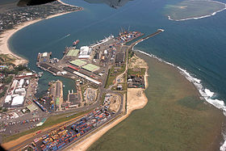

Toamasina
|
Cet article est une ébauche concernant Madagascar.
Vous pouvez partager vos connaissances en l’améliorant (comment ?) selon les recommandations des projets correspondants.
|
| Tamatave Toamasina |
||
|---|---|---|
| 
Vue aérienne du port de Tamatave.
|
||
| Administration | ||
| Pays | ||
| Région | Atsinanana | |
| Province | Toamasina | |
| District | Tamatave-I; Tamatave-II | |
| Géographie | ||
| Coordonnées | 18° 08′ 50″ Sud 49° 23′ 43″ Est / -18.1471, 49.3953 |
|
| Démographie | ||
| Population | 206 390 hab. (est. 2005) | |
| Localisation | ||
|
|
||

{kind=link}
{kind=link}
{kind=link}
Tamatave (ou Toamasina, en malgache) est une grande ville de l'Est de Madagascar, chef-lieu éponyme de la province de Tamatave et de la région de l'Est, située à 353 km au nord-est de Tananarive,
Sommaire[masquer] |
Toponymie[modifier]
Sur les cartes dessinées par les Européens du XVIIe siècle apparaît le nom de Port-aux-Prunes. De nos jours, le nom d'Île-aux-Prunes est porté par un îlot inhabité à 10 milles nautiques au NNE de Tamatave et sur lequel se trouve un phare.
Le sieur de Flacourt est le premier à mentionner Tamatave en 1655, dans son ouvrage Histoire de la grande île Madagascar :
« Depuis la baie d'Antongil que l'on nomme ici Manghabei, jusqu'au Port-aux-Prunes, qu'ils [les Malgaches] nomment Tametavi ».
Au cours du XVIIIe siècle ces deux noms de Port-aux-Prunes ou Tametavi figurent sur les cartes, avec parfois une variante : Port-Tametavi.
Sur la Chart of part of the east coast of Madagascar, établie par le chevalier Grenier en 1768 et publiée en 1782 à Londres, figure pour la première fois le nom de la ville sous sa forme actuelle, Tamatave. Ce nom remplace définitivement celui de « Port-aux-Prunes », qui n'apparaît plus par la suite en cartographie.
Quant au toponyme malgache Toamasina, il ne semble apparaître dans aucun document d'origine européenne avant Histoire et géographie de Madagascar de Henry Descamps (1884). L'interprétation traditionnelle de ce nom est la suivante : le roi merina des Hauts-Plateaux, Radama Ier, découvrant la mer pour la première fois lors de sa conquête de Madagascar, aurait porté un peu d'eau à sa bouche et se serait exclamé : « Toa masina ! » (« C'est salé ! »).
Si la ville (et la province) porte officiellement le seul nom de
Toamasina, le nom français de Tamatave est toujours autant utilisé.
Géographie et climat[modifier]
Le climat est de type subéquatorial : températures chaudes et des pluies fréquentes tout au long de l'année (avec pour Tamatave une température moyenne de 24°C pour 3 500 mm de pluie par an[1]).
De janvier à avril, la saison chaude est rythmée par les cyclones qui peuvent parfois être extrêmement violents. Au niveau éolien l'alizé, vent des régions intertropicales, souffle presque toute l'année.
Administration[modifier]
Tamatave est la capitale de la région de l'Est.
Jumelage[modifier]
 Saint-Étienne (France) depuis 1967.
Saint-Étienne (France) depuis 1967.
Humanitaire[modifier]
Une association humanitaire française, Ô Bout du Monde, créée en 2006 à Questembert (56-Morbihan), appartenant au SEMIL, a créé des liens forts avec des locaux en rénovant un refuge pour les enfants de la rue et va bientôt revenir sur le terrain en 2010 pour continuer son action mais cette fois-ci sur un autre plan d'action, une rénovation d'un autre établissement dans la ville de Tamatave.
Depuis 2004, la ville accueille le siège du Programme de promotion des revenus ruraux (PPRR) financé par le Fonds international pour le développement agricole (FIDA).
Ce programme, d´une durée de vie de huit ans, englobe les régions de l'Est et d'Analanjirofo et a pour objectif de réduire la pauvreté rurale par l´accroissement des revenus des producteurs et le renforcement des communautés de base à prendre en charge leur développement.
Dans la partie Est de Madagascar, plus de 75 % de la population vit sous le seuil de pauvreté[2].
Histoire[modifier]
{kind=link}
De par sa situation géographique : coincée entre d´un côté l’océan, territoire des requins et de l’autre les lagunes et marais la rendant difficile d´accès depuis l´intérieur des terres, Tamatave a d'abord été connue sous le sobriquet de « tombeau des Européens ».
La ville prend son essor sous le règne de Radama Ier (1816-1828) qui l’utilise comme plateforme commerciale pour la traite des esclaves avec les puissances occidentales.
Avec la colonisation française à la fin du XIXe siècle elle devient, au détriment de Majunga, le premier port de l’île et donc la principale fenêtre maritime du pays. La majorité du commerce avec les Anglais transite alors par Tamatave.
Mais, résultat de constructions sommaires et fragiles, la ville est presque totalement détruite par le cyclone du 3 mars 1927.
La volonté de ces habitants et une aide financière conséquente de l’île Maurice permettront de reconstruire une ville plus moderne et organisée. La ville doit à cette période coloniale son plan en damier s'ouvrant sur la mer par la place de l'Indépendance.
En 1929, le premier port en eau profonde permettant de décharger directement à terre marchandises et passagers est construit par un consortium franco-allemand.
Aujourd´hui Tamatave est la deuxième ville de Madagascar et le premier port de l’île.
Population[modifier]
Tamatave est une ville cosmopolite. Elle est majoritairement betsimisaraka. En plus des autres ethnies de l'île, elle abrite aussi une très importante communauté chinoise (le plus souvent métissée), indo-pakistanaises, ainsi qu'une minorité européenne.
Avec une population de plus de 200 000 habitants (estimations 2005), elle est la deuxième agglomération de Madagascar, derrière la capitale, Tananarive, et devant Antsirabé et Majunga.
Économie et productions[modifier]
Capitale de l’Est, au débouché du canal des Pangalanes (axe majeur de transport des marchandises le long de la côte Est malgache), Tamatave possède une importante raffinerie de pétrole assurant l’approvisionnement de la capitale. Son port est le principal port de mer de Madagascar. Il exporte les produits des cultures commerciales de la région : vanille, girofle, café.
Depuis 2007, un grand projet minier conduit, à la demande du président Ravalomanana par un consortium étranger a métamorphosé l'économie de la région. Le projet Ambatovy (Sherritt, SNC Lavallin, Sumitomo Corporation), en plus d'avoir réduit sensiblement le taux de chômage, a réhabilité plusieurs infrastructures.
Bien que la ville et son port soient appelés « le poumon économique » du pays, Tamatave reste une ville peu industrialisée si on la compare à la capitale et Antsirabé.
Patrimoine[modifier]
{kind=link}
- Canal des Pangalanes
- Station balnéaire de Foulpointe (60 km au nord) : sa plage, son récif corallien et son fort en ont fait un haut lieu du tourisme sur la côte Est.
Devise[modifier]
- « Furente Procurat Vento » : « Les vents lui donnent toute force ».
Notes et références[modifier]
Voir aussi[modifier]
Articles connexes[modifier]
Liens externes[modifier]
- Site du FIDA, Fond international pour le développement agricole.
- Site du PPRR, Programme de promotion des revenus ruraux.
- (fr) Site d'information sur les événements de Tamatave.
- (fr) Site de l'université de Tamatave.
- (fr) Site de la Chambre de commerce et d'industrie de Tamatave.
- (fr) Site de l'Office régional du tourisme de Tamatave.
- (fr) Site du port autonome de Tamatave.
- (fr) Site de la Région Est (Atsinanana) de Madagascar.
{kind=link}